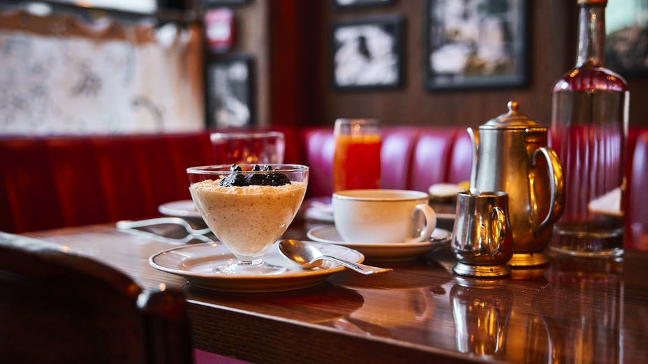

BAYLEAF RESTAURANT
Their vision has been to provide a restaurant with a stunning ambience, where you will receive friendly and attentive service. They have introduced a completely new menu, using traditional cooking techniques and the finest ingredients money can buy. Their exclusive menu not only tastes delicious but also looks incredible on the plate. A feast for the eyes as well as the palate! Their award-winning and skilled chef’s will be using their innovation and creativity to refresh the menu every 3 months, so that they can offer you a different experience for every season.